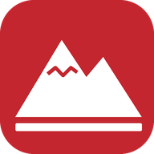

Privacidad
App LdC Rutas · Grupo de montaña Los de las ClarasQuién es el responsable
Grupo de montaña Los de las Claras, autores del blog losdelasclaras.blogspot.com. Contacto: losdelasclaras@gmail.com.
Qué datos se guardan y para qué
- Tu cuenta de Google (solo si entras): nombre, correo, foto de perfil y un identificador. Sirven para que solo tú veas y cambies lo tuyo.
- Lo que guardas en «Mis cosas»: tus puntos (con su nota y su foto si la pones), tus tracks, tus carpetas, las cumbres y rutas que marcas y la lista de mapas descargados. Solo los ves tú.
- Lo que propones a «Seguidores»: el nombre con el que quieres aparecer, tu comentario, tus enlaces, las fotos y el punto, track o carpeta que propones. Lo revisa el administrador y, si se publica, lo puede ver cualquiera. Tu correo lo ve solo el administrador (por si hay que contactarte) y nunca se publica.
- Lo que compartes con un enlace: el track o la carpeta se guarda para que lo pueda abrir quien tenga el enlace.
Tu ubicación
La app usa el GPS del móvil para enseñarte dónde estás, seguir una ruta y la pantalla de emergencia (SOS). Tu ubicación no se guarda ni se envía a ningún sitio, salvo cuando tú decides guardar un punto, compartir algo o mandar tu posición desde el SOS.
Dónde se guardan
- En tu propio móvil (la app, los mapas descargados y tus preferencias).
- Si entras con Google, en Firebase, un servicio de Google, que guarda los datos en sus servidores con medidas de seguridad. Más información: privacidad de Firebase.
Otros servicios que usa la app
Para dibujar el mapa, la app pide los mapas a OpenTopoMap y al Instituto Geográfico Nacional (IGN); la previsión del tiempo a Meteoblue; y las alturas a Open-Meteo. Como cualquier web, estos servicios reciben la dirección de internet de tu móvil al pedir esa información, pero no reciben tu cuenta ni tus datos.
Por qué se pueden guardar
Porque tú lo decides al entrar con tu cuenta y al guardar, proponer o compartir algo (tu consentimiento). Puedes dejar de usar la cuenta cuando quieras.
Cuánto tiempo
Mientras uses la app con tu cuenta. Si nos pides borrarlo todo, se borra.
Tus derechos
- Puedes ver, cambiar o borrar tus puntos, tracks, fotos y carpetas desde la propia app.
- Para borrar tu cuenta y todos tus datos, o para cualquier duda (acceso, rectificación, supresión, oposición o portabilidad), escribe a losdelasclaras@gmail.com.
- Si crees que no hemos tratado bien tus datos, puedes reclamar ante la Agencia Española de Protección de Datos.
Última actualización: 28 de octubre de 2026.
⛰️ Volver a la app